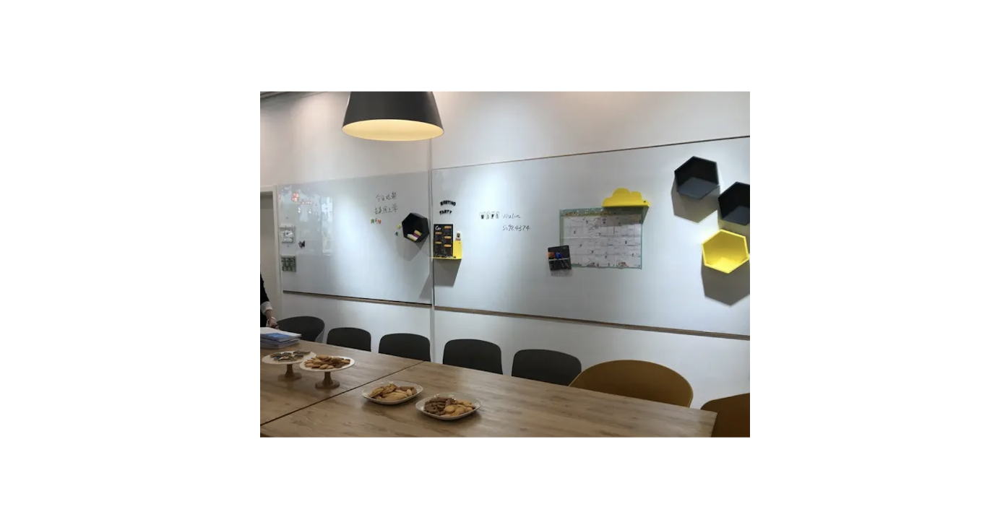
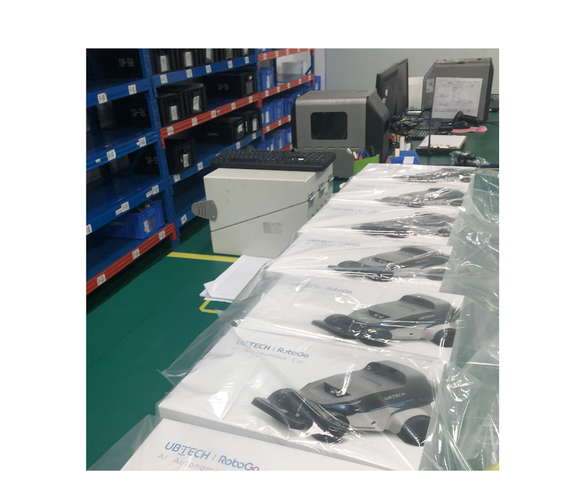
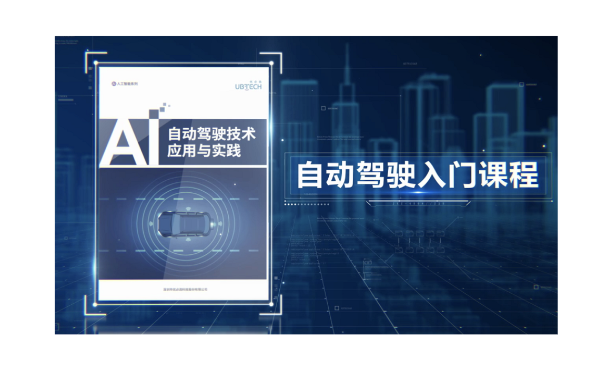
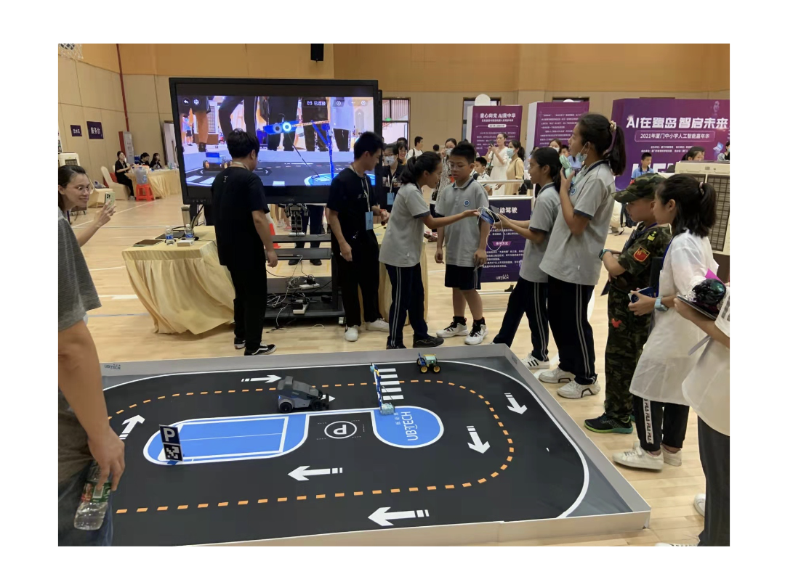

自动驾驶小车
Background
AI box是一款边缘计算器，是公司AI教育的平台型产品，为拓展AI box的应用场景、完善教育解决方案，我们想选择当下热门领域“自动驾驶”作为产品方向。
Research

需求来自于AI box的PDT内部和解决方案团队，联合解决方案团队进行访谈（公立校老师和校外培训机构），收集课程、用户需求
市场调研

与市场经理、业务管理经理共同确定细分市场、制定业务战略与计划。

请教国内相关教研专家、参考国内外内课标确定知识图谱（《普通高中信息技术课程标准》2017版—、CSTA—— 1.Algorithms and Programming (3B-AP-09 ,3B-AP-10 ,3B-AP-16); 2.Impacts of Computing (3B-IC-25 ,3B-IC-26 ,3B-IC-27 )等）
竞品分析
我们通过深入竞品交付项目、与渠道代理交流等方式对竞品进行调研，发现：国内市场k12教育阶段自动驾驶教育产品品种和销量都很少，但地方政策鼓励、课标建议已陆续推出，市场属于导入期。

搜集竞品资料、体验竞品产品，通过评估表对直接竞品、间接竞品在多个维度进行横向对比，发现产品机会。

搜集竞品资料、体验竞品产品，通过评估表对直接竞品、间接竞品在多个维度进行横向对比，发现产品机会。
任务书与预研

完善产品需求，通过概念、功能规格和整体方案评审，与项目经理等共同完成项目任务书

与工程师一同进行方案设计与评估，与采购、供应线进行关键器件选型。

硬件设计：MD,ID，CMF设计与投模，pcba设计与投板等等。

完成详细需求书与评审，包含硬件需求、桌面应用软件需求、API需求、视觉导航需求等。

视觉算法、导航算法及各类功能技术预研。
开发与验证

EVT：工程验证，对样机进行基本功能、安规、参数等测试，与技术代表对未满足需求的设计进行调整。

DVT:整机功能验证、用户体验测试、stakeholders内测；收集反馈进行体验优化，同时联合市场经理启动上市计划：展会曝光、渠道宣传等。

PVT:制程、生产工艺验证。
go to market

与解决方案经理完善方案，支持内容创作方将配套课程内容输出。

整理产品信息：规格书、产品介绍、功能介绍、roadmap等，完成内部与渠道培训，配合营销经理、品牌经理筹备宣传计划、营销规划等。

初期交付跟随交付团队去现场收集用户反馈，优化迭代产品。